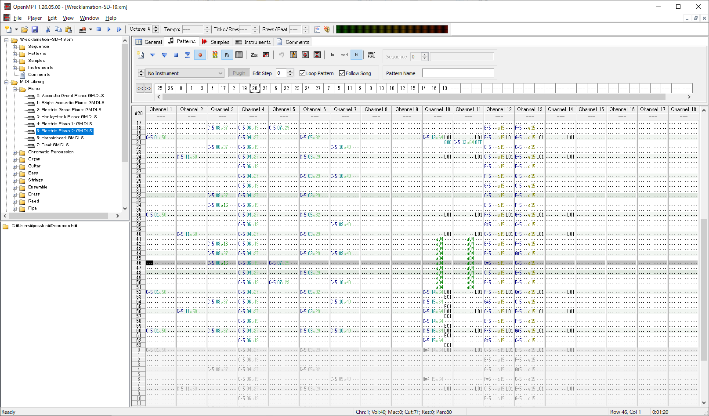
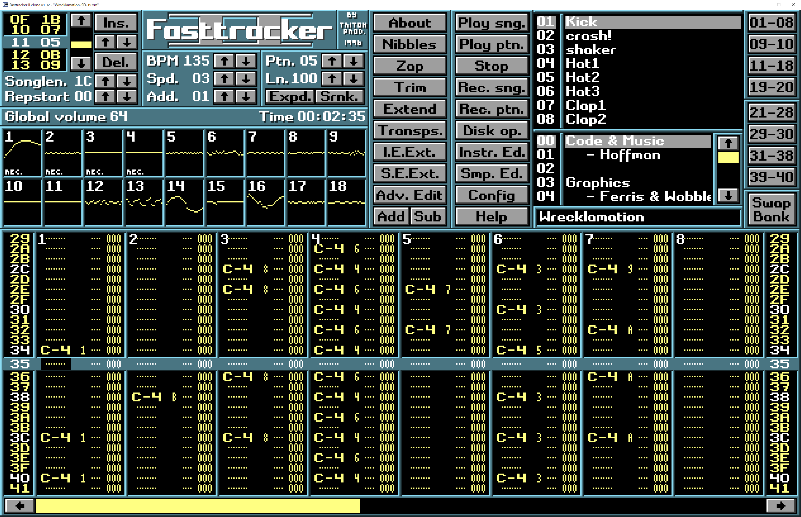
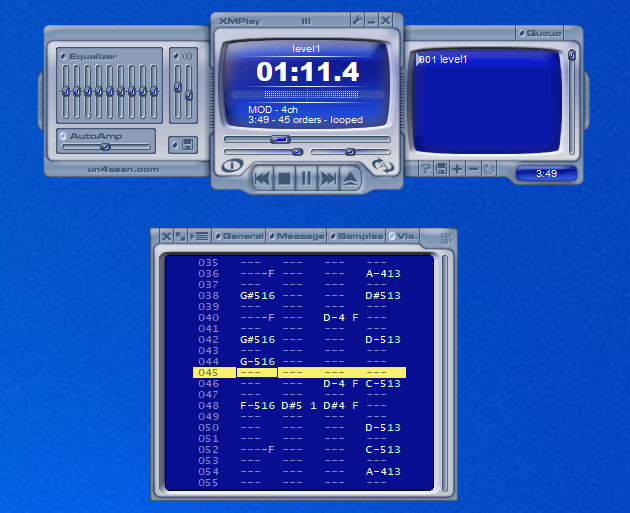

ミュージックフォーマット MOD について
MOD は、海外のパソコン Amiga 上で生れ、発展したミュージックフォーマットです。 このではその概要についてまとめます。概要
- MOD とは
-
MOD はミュージックフォーマットの一種です。
初期は MOD 形式のみでしたが、
その後派生して、S3M 形式 / XM 形式 / IT 形式などの様々なバリエーションが登場しました。
総称して MOD と呼んでいます。
初期の MOD 形式は 1987年リリースで、後期の IT 形式が 1995 年リリースです。
それ以降フォーマットが拡張されることはありませんでした。
4 つの形式の中で、主流とされるのは XM 形式 です。
- MOD の音色データはサンプリング音のみが利用可能
-
MOD データは音色を定義するサンプリングデータと、
音を並べて曲を作るためのシーケンス情報から構成されます。
音色データは、サンプリング音以外は利用できません。
たとえ矩形波や三角波などの単純な波形であっても、
サンプリング音として用意する必要があります。
- MOD データは楽曲データの中身がまる見せなフォーマットである
-
MOD データにはソースコードという概念がなく、
楽曲データ = ソースコード となっています。
したがって、楽曲データの中を覗くと、構成する音色情報やシーケンス情報などすべての情報がまる見せになっています。
中身がまる見せであることはフォーマットの不備と考えることもできますが、 結果的に新規アーティストが先駆者たちの優れた楽曲データから学ぶことを可能にし、 またアーティスト同士が相互に刺激しあう（パクリ合う）きっかけを作り、 コミュニティを発展させることにつながりました。
MOD の長所・短所
- MOD の長所
-
- 再生結果が再生機材に依存しない
-
データファイル内に音色データをサンプリングデータとして持つので、
MIDI 音源等の様に使っている機材毎に再生結果が異なるといった心配がありません。
- データサイズが比較的小さい
-
楽曲データは音色定義のための短いサンプリング音とシーケンスデータで構成されるので、
mp3 等のストリーミング系のフォーマットに比べデータサイズを小さくできます。
- 枯れたフォーマットである
-
これ以上改変されることがないフォーマットです。
フォーマットのバージョンによって動作が異なるなどの心配がないので、
安心して楽曲データ作成に集中することができます。
- MOD の短所
-
- 再生結果が再生ソフトによって異なる
-
MOD の再生結果は、再生ソフトによって異なります。
同様にデータ作成ツールごとに方言があり、
再生ソフトの相性次第で再生結果が異なります。
ゲームやデモプログラム等の BGM に用いる場合は、 再生ソフトをアプリケーションに内蔵してしまえば良いので、 再生ソフト毎の差異の問題は考える必要は有りませんが、 例えば MOD データを単体で WEB 上で配布するような場合は、 推奨再生環境を指定しておく必要があります。
- フォーマットの完全な仕様書は存在しない
-
フォーマットの仕様書は存在するのですが、
事実上の標準となっているのは、主要な MOD 作成ソフトおよび再生ソフトの挙動そのものです。
仕様書に書かれていないような細かな動作の違い、解釈の違い、実装バグ等々が、再生結果に影響を与えます。
主要ソフトの実装が「動く仕様書」になっている状況です。
また一部のデータはバグをテクニックとして活用しているケースがあります。 バグに依存したデータは、本来であればイリーガルなデータとして排除されるべきところですが、 そのようなデータは往々にして機能を細部まで活用した優れた楽曲データであり、 逆にそれらを正しく再生できることが実装側に求められることになります。 最終的には、バグも含めて事実上の仕様として定着していくことになります。
このような状況が長く続いた結果、 完全互換な再生ソフトは主要な MOD 作成ソフトのデコーダ実装の完全クローン以外ありえないという状況になっています。 さらに困ったことに、デコーダの実装はソース非公開であったり、 歴史的な経緯でフルアセンブラ実装だったりするため、 それらを移植することはとても困難です。
MOD がサポートする機能
MOD形式 / S3M形式 / XM形式 / IT形式 で差がありますが、 MOD がサポートする機能は概ね以下の様なものです。- 多チャンネル同時発声
- ポルタメント
- ボリュームスライド
- パンスライド
- サンプリングデータのループ再生
- サンプリングデータの各種エンベロープ指定
- 音量の変化を示すボリュームエンベロープ
- パンの変化を示すパンエンベロープ
- 音程の変化を示すピッチエンベロープ
- 音階ごとのサンプリングデータ差し替え
MOD データの構成要素
MOD データは以下に挙げる要素で構成されています。- Note
-
音符に相当します。音階、音色、音量、エフェクト等の情報をまとめたものです。
- Row
-
各チャンネルの Note を横一列に記述した行を Row と呼びます。
これはある瞬間の各チャンネルの発声状況を記述したものです。
- Pattern
-
１小節相当の演奏内容を記述したものです。
Row を縦に羅列したものです。
- Sequence
-
Pattern の演奏順序を数字の羅列で示したものです。
Sequence は Order とも呼ばれます。
- Sample
-
サンプリングデータ、つまり音色の波形データです。
ループ再生の指定等が可能です。
- Instrument
-
音色データです。以下のような情報を含んでいます。
- サンプリングデータ番号（音階毎に設定可能）
- 各種エンベロープの形状
- 自動ビブラートの形状
MOD データの作成
MOD データ作成ツールは、一般的に Tracker と呼ばれています。 以下のようなツールが利用可能です。- OpenMPT
-
一般的な Windows アプリケーションの体裁をもつトラッカーです。
こちら
からダウンロードできます。

OpenMPT
- FastTracker II
-
FastTracker II は、
XM 形式開発チームによるオリジナル実装です。
長らくメンテナンスが途絶えていましたが、
有志によるクローン実装が存在しており、windows 上から利用できます。
こちら
からダウンロードできます。
FastTracker II は DOS ベースのツールであるため、 一般的な Windows アプリケーションとは操作系が異なります。

ft2-clone
- ProTracker
-
ProTracker は、Amiga 上で作成されたトラッカーで、MOD 形式のみをサポートします。
こちらも、有志によるクローン実装が存在しており、windows 上から利用できます。 こちら からダウンロードできます。
MOD データの再生
- おすすめ再生ソフト
-
XMPlay
がオススメです。
XMPlay はもともと XM 形式の再生に特化して作成されたもので、
XM 形式をはじめ MOD データの再現精度が高いとされています。
2020 年現在、デモパーティで使用される MOD 再生環境としてデファクトスタンダードとなっています。

XMPlay
MOD とデモシーンの関係
デモシーンについては、 こちら を参照してください。MOD 形式は Amiga 発祥のミュージックフォーマットで、 Amiga 上で作成されたデモの音源として広く利用されました。 その後継である XM 形式 / S3M 形式 / IT 形式などのフォーマットは、 いずれも PC デモの音源として広く利用されました。 このような経緯から、 MOD はデモシーンにとってなじみのあるフォーマットになっています。 現在のデモパーティでも、コンペティションの部門として、 MOD による楽曲で競う Tracked Muisc Compo というカテゴリが存在します。
Tracked Muisc Compo では、 エントリ作品はパターン情報などの中身が丸見せ状態で再生されます。 楽曲の中身は詮索されたくないと感じるコンポーザーの方もいらっしゃるかもしれませんが、MOD はフォーマットの性質上、楽曲の中身を隠すことは不可能です。 むしろ、丸見せであることを逆手にとって、 パターン情報上でアスキーアートアニメーションを同時に再生したり、 パフォーマンスの一手段として利用されることもあります。
再生中のパターン表示も作品の一部になっている
パターン上でのアニメーション再生は jump 命令を駆使して行われる
MOD はゲーム開発等の様々な用途でも利用された
MOD はサンプリング音源を利用したオープンなフォーマットとして広く、 様々な用途で活用されました。アタリが 1993 年（日本は 1994 年）に発売したゲーム機である Atari Jaguar は、 Amiga に近いサウンドスペックを持ち、制御 CPU に 68000 が搭載されていたため、 既存の MOD デコーダを流用することが可能でした。
初期の PlayStation のゲーム開発では、 一部のコンポーザーの間では MOD 形式として楽曲を作成し、 これを元に本番環境用のデータに変換する方法が利用されていました。
スーパーファミコンの音源は、MOD と似たサンプリング音源ベースであったため、 そのキャプチャ形式として知られる SPC フォーマットは、 XMSNES や SNESMOD といったツールを利用することで、 MOD 形式と相互に変換することが可能でした。
このほか MOD 形式は、 日本の一部のアーケードゲーム機の開発ではかなり長い間現役フォーマットとして利用されました。 CAVE 社からリリースされたシューティングゲームでは、 サウンドまわりに ICS2115 という音源ボードが利用されました。 このボードは、サンプリング音源を任意の再生レートで多チャンネル再生できる仕様のもので、 制御用の組み込み CPU として 68000 が利用されていました。 つまり Amiga のサウンド周りがそのままハードウェア化したようなもので、 楽曲データとして MOD 形式が利用されました。
2000/07/11 初出
2021/02/01 全面的リライト
文責： よっしん
[戻る]